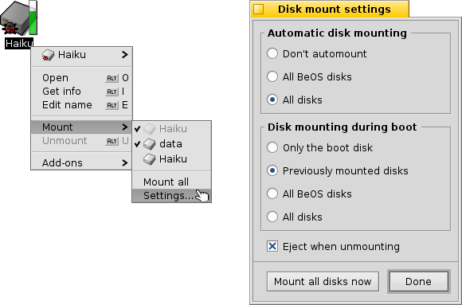
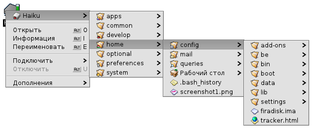
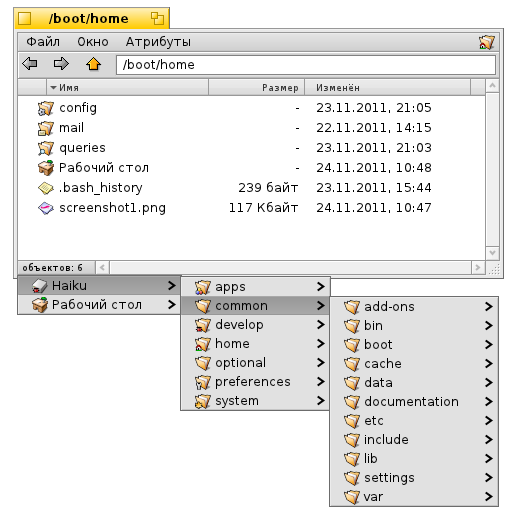
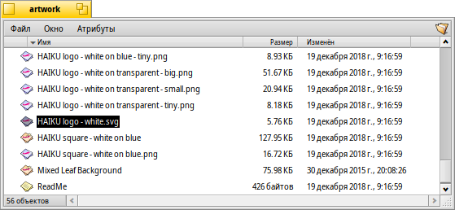
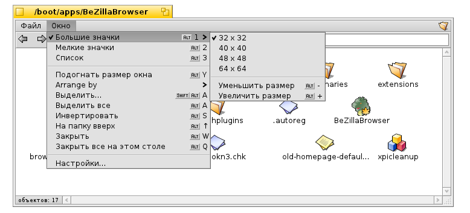
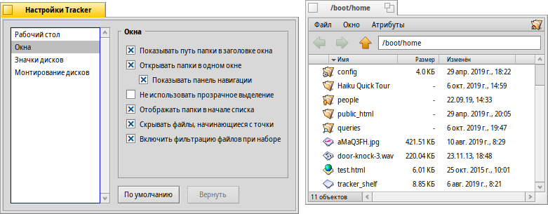
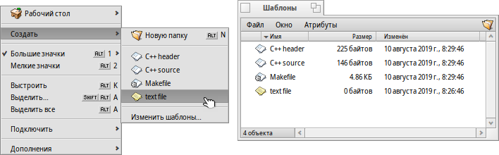
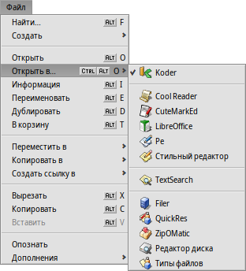
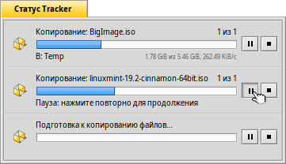

Русский
Русский Français
Français Deutsch
Deutsch Italiano
Italiano Español
Español Svenska
Svenska 日本語
日本語 Українська
Українська 中文 ［中文］
中文 ［中文］ Português
Português Suomi
Suomi Slovenčina
Slovenčina Magyar
Magyar Português (Brazil)
Português (Brazil) English
English| Содержание |
|
Подключение дисков Навигация Внешний вид Настройки Работа с файлами Статус передачи данных |
Tracker
Файловый менеджер Tracker (далее просто Tracker) позволяет создавать новые файлы и папки, а также копировать, удалять, переименовывать, искать и открывать уже существующие.
Being an application like any other (the Desktop with its icons is really just a fullscreen window in the background), Tracker appears with its windows in the Deskbar and can be quit and restarted. The easiest way to quit and restart a crashed or frozen Tracker (or a wayward Deskbar) is to call the Team Monitor.
 Подключение дисков
Подключение дисков
Для того, чтобы получить доступ к жёстком диску, CD-диску, USB-диску и т.д., вам сначала нужно смонтировать раздел. Это можно сделать, щелкнув правой кнопкой мыши на рабочем столе и выбрав нужный раздел из меню . Меню также можно найти в панели задач Deskbar.
Для того, чтобы после каждой перезагрузки не монтировать снова все вручную, существуют .
Эти настройки позволяют автоматически смонтировать любое устройство хранения при подключении и настроить монтирование при загрузке системы всех дисков, которые были смонтированы ранее.
Навигация
По умолчанию при двойном щелчке по папке Tracker откроет её в новом окне. Это может привести к тому, что весь Ваш рабочий стол будет заполнен окнами.
Этого можно избежать, удерживая клавишу OPT, которая автоматически закрывает родительское окно.
Это также работает при навигации при помощи клавиатуры . Для более детального изучения следует обратиться к теме Горячие клавиши.
Перемещение по папкам является одной из главных целей Tracker. Ряд уникальных особенностей Tracker помогут делать это более эффективно.
Ниспадающие подменю
Вместо того, чтобы каждый раз дважды щелкать по папке, чтобы перейти на уровень ниже, есть более эффективное решение:
Щелкните правой кнопкой мыши по папке, и в самом верху контекстного меню Вы найдете подменю текущей папки, которое позволит Вам перемещаться вниз по уровню. Просто перемещайтесь вниз по иерархии, пока не найдете нужную папку или файл. Как только Вы найдете его, просто щелкните по нему, чтобы открыть. Изображение выше иллюстрирует содержание папки /boot/home/config/.
Если Вы будете переносить файл подобным образом, то он переместится туда, куда Вы его положите.
Подобный метод можно использовать в любом окне Tracker:
Щелкните в область в левом нижнем углу, где отображаете количество элементов в списке, и вы увидите подменю местоположения уровнем выше. С помощью него вы также можете передвигаться по папкам.
Запомните, что рабочий стол является самым верхним уровнем, на нем Tracker отображает все смонтированные разделы. Так что, для того, чтобы перейти на другой диск вам нужно для начала, переместиться на самый верх (т.е. на рабочий стол).
Вы также можете использовать ниспадающие подменю для того, чтобы скопировать файл. Для этого выберите файл и перенесите его на папку. Удерживая его некоторое время над папкой, вы увидите подменю, с помощью которого вы сможете выбрать место назначения. Если переносить файл при помощи правой кнопки мыши, то у вас будет возможность выбрать, что сделать с ним - скопировать, переместить или создать на него ссылку.
Перемещение к файлам и папкам по названию
Вы возможно знакомы с этой концепцией: наберите несколько первых букв из названия файла, и вы переместитесь к файлу, который начинается с этих букв. Однако мы постарались улучшить эту идею. Если нет файла с названием, которое начинается с эти букв, то вы переместитесь к первому файлу, который содержит их в любом месте своего названия. И даже если этих букв совсем нет в названии файла, то вы переместитесь к файлу, атрибуты которого содержат эти буквы.
В примере выше все файлы начинаются с "Haiku logo", так что набор первых букв будет бесполезным. Поэтому вместо "Haiku", наберем "web" и сразу же переместимся к первому файлу с названием "Haiku logo - website". Все набранные буквы отображаются в левом нижнем углу, где обычно отображается количество файлов в папке. Секунду спустя это поле вернется в прежнее состояние.
Фильтрация файлов и папок по названию
Вместо того, чтобы перемещаться к файлам или папкам по названию, можно отфильтровать их по названию. Это позволит значительно увеличить точность поиска, особенно в папках с большим количеством файлов. Используя клавиши SHIFT SPACE в качестве разделителя, вы сможете отфильтровать по нескольким параметрам.
В отличие от перемещения по названию, фильтрация будет действовать пока вы не нажмете клавишу ESC, либо не закроете окно (или не покинете папку, если вы используете опцию Открывать папки в одном окне).
Эту опцию вы можете активировать в настройках Tracker.
Внешний вид

Tracker предлагает три различных режима просмотра при помощи меню :
(ALT 1) - Big icons, you can change the size from the submenu or in/decrease their size with ALT +/-.
(ALT 2) - Small icons.
(ALT 3) - A detailed list of your files enabling you to show/hide available attributes. (See topic Attributes.)
Меню также предоставляет ряд других функций:
Подогнать размер окна (ALT Y) - Подогнать окно по размеру.
- Only available in Icon or Mini icon view, a submenu allows to set the sorting order to various properties:
, , , , , , ,
- Inverts the sorting order
(ALT K) - Aligns all icons to an invisible grid. Hold down SHIFT and the menu becomes which additionally sorts all icons according to the above selected criterium.
(SHIFT ALT A) - Select files according to a regular expression.
(ALT W) - Closes the window. Hold down SHIFT and the menu becomes which closes every Tracker window.
(ALT Q) - Closes every Tracker window in the current workspace. A useful shortcut if you forgot to hold the OPT key while clicking through folders and all those still open Tracker windows clutter your workspace.
Бывают случаи, когда вам нужно перенести несколько иконок без выравнивания всех по сетке при помощи (ALT K).В этом случае выберите нужные иконки и перед тем, как перенести их на новое место, нажмите и удерживайте клавишу ALT. После того, как вы отпустите их, они выровняются по сетке.
Остальные функции говорят сами за себя.
Настройки
Меню открывает окно, которое предлагает ряд настроек. Все настройки применяются в реальном времени, таким образом все изменения будут сразу же видны.
Перейдем к описанию настроек:
- Decide if all mounted disks appear directly on the Desktop or in a window after clicking a single Disk icon sitting on the Desktop.
- You can set , i.e. a double-clicked folder doesn't open in its own window, but inside the already open window instead, replacing the view of it's parent folder. This is not the same as clicking while holding the OPT key, as described above, because you'll lose the per window saved position and size.
Before you switch Tracker to Single Window Navigation mode, because that may feel more familiar to you, we recommend giving the menu based browsing a try first, as that may actually work much faster for you after getting used to. On the other hand, single window browsing offers a Navigator where you can enter or copy & paste a path name and use back, forward and up buttons.
Activating will filter the contents of a Tracker window while you type to only display the files matching your string in their name or any currently displayed attribute. See above.
- Set the behavior when deleting a file.
- Set the color of an optional indicator of free space that's shown besides a disk's icon.
Это окно настроек также доступно из меню Tracker в меню панели задач Deskbar.
Работа с файлами
Если выделить файл и щелкнуть правой кнопкой мыши, то появится контекстное меню с командами. Также эти команды можно найти в меню .
Названия команд, как обычно, достаточно понятны.
- Find a file or folder. See topic Query for more info.
- Create a new folder or any other file based on a template.
Choosing opens the folder /boot/home/config/settings/Tracker/Tracker New Templates. Creating a file in that folder will offer its filetype with the file's name and other attributes as template in the menu. Here, there's a file "Text" with the filetype text/plain. See topic Filetypes for more info.
- A submenu offers all applications that can handle this filetype.
The preferred application that would open the file when double-clicked, is checkmarked. This submenu lists first those applications that can handle the exact filetype, in this case it's a text file, the type text/plain. Next come all applications that can handle that supertype in general, here text/*. Last in the list are those that can deal with any file. If you don't click on an app in the submenu, but on the entry instead, a panel opens:

Here you'll again find the programs that were listed in the submenu. By selecting one and clicking the button, you changed the preferred application for every file of that filetype, here text/plain.
-

The panel presents info on the selected file and lets you set the default application and, after you expanded that part of the panel, permissions and owner. Clicking on the path will open it in a Tracker window.
, and - lets you rename or duplicate a file or put the selected file(s) to the trash.
, and - lets you move, copy or link the selected file(s) using the submenu navigating method. Holding SHIFT while invoking the menu offers the option to create a relative link.
, and - lets you cut, copy and paste files using the clipboard. By holding SHIFT while invoking the menu you can files, maybe from another folder that you can paste somewhere else later. Also, while holding SHIFT you can paste the copied files in the clipboard as links.
- will sniff out and set the type of files if they didn't have one before, e.g. if you transferred a file with wget which doesn't set a filetype itself. Holding SHIFT while invoking the menu changes the item to which identifies the filetype and corrects it if it was false before.
- offers you every generic Tracker add-on and those that can handle the selected file(s). See topic Tracker Add-ons for more information.
Статус передачи данных
Когда вы копируете, перемещаете или удаляете файлы, Tracker отображает ход выполнения операций. Если вы выполняете более одной операции, каждая из них будет иметь свой индикатор выполнения.
Справа расположены две кнопки для приостановки и полной остановки операции. Иногда удобно приостановить на время большую операцию. Например, вам срочно нужно запустить ресурсоёмкое приложение. Копирование больших объемов данных может сильно нагрузить ваш жесткий диск, что существенно скажется на быстродействии.